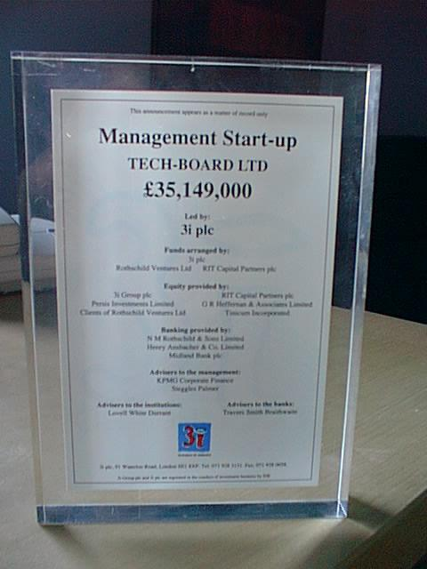
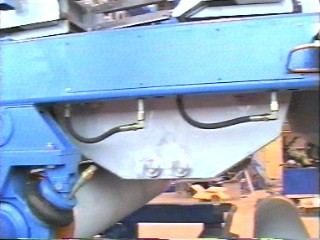
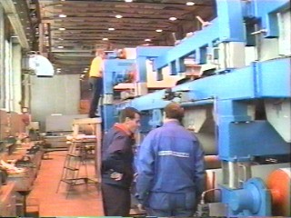
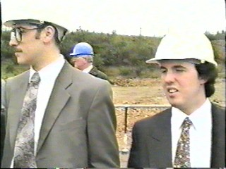
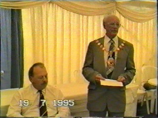
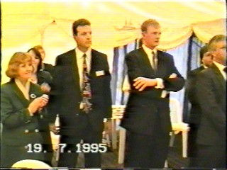

<!DOCTYPE html>
<html lang="en">
<head>
    <meta charset="UTF-8">
    <meta name="viewport" content="width=device-width, initial-scale=1.0">
    <title>The Tech-Board Story</title>
    <style>
        :root {
            --bg-primary: #f8fafc;
            --bg-sidebar: #0f172a;
            --sidebar-text: #94a3b8;
            --sidebar-active: #38bdf8;
            --text-main: #334155;
            --text-title: #1e293b;
            --accent: #0284c7;
            --border: #e2e8f0;
        }

        * {
            box-sizing: border-box;
            margin: 0;
            padding: 0;
        }

        body {
            font-family: -apple-system, BlinkMacSystemFont, "Segoe UI", Roboto, Helvetica, Arial, sans-serif;
            background-color: var(--bg-primary);
            color: var(--text-main);
            display: flex;
            min-height: 100vh;
            line-height: 1.6;
        }

        /* Sidebar Navigation */
        aside {
            width: 280px;
            background-color: var(--bg-sidebar);
            color: #fff;
            display: flex;
            flex-direction: column;
            position: fixed;
            top: 0;
            bottom: 0;
            left: 0;
            overflow-y: auto;
            z-index: 10;
        }

        .sidebar-header {
            padding: 24px;
            border-bottom: 1px solid #1e293b;
            display: flex;
            flex-direction: column;
            gap: 8px;
        }

        .sidebar-header h1 {
            font-size: 1.25rem;
            font-weight: 700;
            color: #fff;
            margin-bottom: 4px;
        }

        .sidebar-header p {
            font-size: 0.75rem;
            color: var(--sidebar-text);
            text-transform: uppercase;
            letter-spacing: 0.05em;
        }

        .site-logo {
            max-width: 80px;
            height: auto;
            border-radius: 4px;
            background: #fff;
            padding: 4px;
        }

        nav {
            padding: 16px 0;
            flex-grow: 1;
        }

        .nav-item {
            display: block;
            padding: 12px 24px;
            color: var(--sidebar-text);
            text-decoration: none;
            font-size: 0.9rem;
            font-weight: 500;
            transition: all 0.2s ease;
            cursor: pointer;
            border-left: 4px solid transparent;
        }

        .nav-item:hover {
            color: #fff;
            background-color: #1e293b;
        }

        .nav-item.active {
            color: var(--sidebar-active);
            background-color: #1e293b;
            border-left-color: var(--sidebar-active);
        }

        /* Main Content Container */
        main {
            margin-left: 280px;
            flex-grow: 1;
            padding: 40px;
            max-width: 1000px;
        }

        article {
            background: #fff;
            padding: 40px;
            border-radius: 8px;
            box-shadow: 0 1px 3px rgba(0,0,0,0.05);
            border: 1px solid var(--border);
        }

        .chapter-title {
            font-size: 2.25rem;
            color: var(--text-title);
            margin-bottom: 8px;
            font-weight: 800;
            letter-spacing: -0.025em;
        }

        .chapter-subtitle {
            font-size: 1.1rem;
            color: #64748b;
            margin-bottom: 24px;
            font-style: italic;
        }

        p {
            margin-bottom: 1.25rem;
            font-size: 1.05rem;
        }

        ul, ol {
            margin-bottom: 1.25rem;
            padding-left: 1.5rem;
        }

        li {
            margin-bottom: 0.5rem;
        }

        hr {
            border: 0;
            height: 1px;
            background: var(--border);
            margin: 32px 0;
        }

        .quote-block {
            background-color: #f1f5f9;
            border-left: 4px solid var(--accent);
            padding: 16px 20px;
            margin: 24px 0;
            font-style: italic;
            border-radius: 0 4px 4px 0;
        }

        /* Modernized Image Layouts */
        .image-gallery {
            display: grid;
            grid-template-columns: repeat(auto-fit, minmax(280px, 1fr));
            gap: 20px;
            margin: 24px 0;
        }

        .gallery-item {
            background: #f8fafc;
            border: 1px solid var(--border);
            border-radius: 6px;
            padding: 12px;
            display: flex;
            flex-direction: column;
            gap: 8px;
        }

        .gallery-item img {
            width: 100%;
            height: auto;
            max-height: 240px;
            object-fit: contain;
            background: #fff;
            border-radius: 4px;
        }

        .image-caption {
            font-size: 0.85rem;
            color: #64748b;
            text-align: center;
            line-height: 1.4;
        }

        .single-media {
            max-width: 480px;
            margin: 24px auto;
        }

        /* Table Styling */
        table {
            width: 100%;
            border-collapse: collapse;
            margin: 24px 0;
            font-size: 0.95rem;
        }

        th, td {
            padding: 12px 16px;
            text-align: left;
            border-bottom: 1px solid var(--border);
        }

        th {
            background-color: #f1f5f9;
            color: var(--text-title);
            font-weight: 600;
        }

        tr:hover td {
            background-color: #f8fafc;
        }

        footer {
            margin-top: 40px;
            padding-top: 20px;
            border-top: 1px solid var(--border);
            font-size: 0.85rem;
            color: #64748b;
            text-align: center;
        }

        @media (max-width: 768px) {
            body {
                flex-direction: column;
            }
            aside {
                width: 100%;
                position: relative;
                height: auto;
            }
            main {
                margin-left: 0;
                padding: 16px;
            }
            article {
                padding: 20px;
            }
        }
    </style>
</head>
<body>

    <!-- SIDEBAR NAVIGATION -->
    <aside>
        <div class="sidebar-header">
            
            <div>
                <h1>The Tech-Board Story</h1>
                <p>Greenfield Startup Failure</p>
            </div>
        </div>
        <nav id="sidebar-nav">
            <!-- Navigation links injected via JS -->
        </nav>
    </aside>

    <!-- CONTENT FRAME -->
    <main>
        <article id="content-area">
            <!-- Dynamic chapter content will slide in here -->
        </article>
        
        <footer>
            This compilation is dedicated to the memory of Mr. Mike Parrott. Compiled originally by Guy Spaven & Pierre Topping.
        </footer>
    </main>

    <!-- ARCHIVAL TEXT INJECTION ENGINE WITH LIVE ASSETS -->
    <script>
        const chapters = {
            index: {
                title: "Introduction",
                subtitle: "The Largest Venture Capital Greenfield Startup Failure in British History",
                content: `
                    <p>Welcome to the true chronicle of Tech-Board, based in Rassau, near Ebbw Vale, South Wales. This site serves as a complete history tracking the monumental task of raising finance, constructing a state-of-the-art hardboard production facility, and mapping out its subsequent serialization of demises.</p>
                    <div class="quote-block">
                        "Stranger than fiction: A story of ambition, vast investment, structural strains, engineering hurdles, and an industrial park that saw its gates closed over and over again."
                    </div>
                    <p>This workspace has been redesigned to map every single narrative thread, tracking how an aging UK board sector tried to reinvent itself in the Welsh valleys, ending in systemic receivership. Use the sidebar to step sequentially through the historical chapters from 1989 through to the aftermath of 2001.</p>
                `
            },
            uk_hard: {
                title: "1. UK Hardboard",
                subtitle: "The Pre-History & Catalyst in Sittingbourne, Kent",
                content: `
                    <p>In 1989, the aging UK Hardboard plant in Kemsley was abruptly shut down. The primary, fatal mechanism was a sudden sky-rocketing of the plant's annual electricity bills by several hundred percent, wiping out all operational profitability overnight.</p>
                    <p>During the year in which the electricity costs sky-rocketed:</p>
                    <ul>
                        <li>No more energy was consumed, compared with the previous year.</li>
                        <li>The price of energy did not change.</li>
                    </ul>
                    <p>Shortly after the closure, the remaining integrated paper mills at Kemsley were sold off to a New Zealand conglomerate, Fletcher Challenge. Redundant employees openly grew cynical, wondering if the financial mechanics were a corporate ploy to deliberately load fixed overhead costs onto the hardboard division to artificially polish the balance sheet of the paper mill for sale.</p>
                    <p>Regardless of the underlying reality, Malcolm Graham was already drafting blueprints for a brand new, highly efficient greenfield hardboard production plant to break away from the constraints of Kemsley. The sudden closure acted as the definitive catalyst that pushed his quest into overdrive.</p>
                `
            },
            malcy: {
                title: "2. Malcy: The Wilderness Years",
                subtitle: "1989 – 1992: Chasing the Capital",
                content: `
                    <p>Following the immediate fallout of the 1989 closure, the initial skeletal team—consisting of Malcolm, Sean, Bob, Graeme, Guy, and Hazel—scattered to balance survival with keeping the dream alive. Their primary task was iteratively polishing a complex industrial business plan and pitching to speculative financiers, including brief cross-border exploratory talks with potential backers in France.</p>
                    
                    <div class="single-media gallery-item" style="text-align:center; max-width:240px;">
                        
                        <div class="image-caption" style="margin-top:8px;"><strong>Malcolm Graham:</strong> Pushing through the wilderness years to anchor institutional backing.</div>
                    </div>

                    <p>Between 1989 and mid-1992, Malcolm entered the "wilderness years." He moved through a revolving door of temporary financial sponsors who provided short-term office spaces, secretarial tools, and basic overheads while he continuous pitched the project to institutional capital groups.</p>
                    <p>The breakthrough finally arrived in mid-1992. Word filtered back to the team that Malcolm had secured structural backing and anchored a central planning command outpost located on Imperial Road in Fulham, London.</p>
                `
            },
            imp_rd: {
                title: "3. Imperial Road",
                subtitle: "The London Planning Outpost",
                content: `
                    <p>The strategic phase at Imperial Road formalized the corporate shell of Tech-Board. It was here that complex machinery contracts, European engineering timelines, and core organizational charting began to manifest. Key management characters were onboarded to steer the project toward physical reality:</p>
                    
                    <div class="image-gallery">
                        <div class="gallery-item">
                            
                            <div class="image-caption"><strong>Tony Read (Financial Director):</strong> Attached early during the Imperial Road tenure, managing the complex models required by venture capital funds. He committed to moving down to the Welsh valleys.</div>
                        </div>
                        <div class="gallery-item">
                            
                            <div class="image-caption"><strong>Austin Slater:</strong> Re-appeared during the final months of planning at Imperial Road, coordinating machinery acquisition paths despite early structural friction.</div>
                        </div>
                    </div>
                    
                    <p><strong>Ted Ellis (HR Manager):</strong> Very, Very, Welsh, Ted appeared during the last couple of months at Imperial Road, and was appointed as Tech Board's HR Manager to lay the groundwork for local recruitment and labor contracts in Gwent.</p>
                `
            },
            the_deal: {
                title: "4. The Deal",
                subtitle: "Overnight Closings and Corporate Tombstones",
                content: `
                    <p>The process of finalizing venture capital funding for an industrial operation of this scale is a gruelling exercise. After standard institutional due diligence loops spanning months, all counter-parties, underwriters, and legal teams converged to bind the structural contracts.</p>
                    <p>Per investment banking tradition, the final signing session was orchestrated entirely overnight. Beginning at 7:00 PM, the teams endured a marathon legal check that stretched until 5:30 AM the following morning as the sun began to rise. At that point, everyone drank champagne—a real anticlimax.</p>
                    
                    <div class="image-gallery">
                        <div class="gallery-item">
                            
                            <div class="image-caption">The commemorative Lucite "Tombstone" awarded to the original team members to mark the deal closing.</div>
                        </div>
                        <div class="gallery-item">
                            
                            <div class="image-caption">Historical records detailing the closing underwriting assets from July 19, 1994.</div>
                        </div>
                    </div>
                    <p>The primary financial foundation was anchored by **Commander Learmond** and institutional venture capital giant **3i**, marking what was at that time the largest individual venture-capital backed greenfield manufacturing startup in British history.</p>
                `
            },
            ent_house: {
                title: "5. Enterprise House",
                subtitle: "Establishing the Beachhead & Learning Swedish",
                content: `
                    <p>With multi-million pound funding locked, operations relocated to South Wales, setting up a physical beachhead at Enterprise House in the Rassau Industrial Estate. The environment was intense, dominated by technical drawings and immediate vendor onboarding cycles.</p>
                    <p>Because the primary raw wood processing machinery was sourced from Scandinavian manufacturers (such as Sunds Defibrator), the startup team was subjected to rapid Swedish language training courses. The training sessions led to classic internal office jokes as Welsh engineering staff clashed phonetically with technical phrases like <em>"Shushna bushta ling ling"</em>.</p>
                    <p>Concurrently, the team faced its first community management challenge: local residents immediately mobilized a committee to challenge a 24-hour manufacturing facility. Malcolm managed to ease local anxiety during town-hall sessions by famously asserting that the exhaust of a modern refiner system didn't smell of industrial chemicals, but rather shared an olfactory profile with "baking apple pie."</p>
                `
            },
            pant: {
                title: "6. Pantybaileau House",
                subtitle: "Communal Living & The 'News of the World' Incident",
                content: `
                    <p>During the intense pre-production and construction phases, commuting executives and engineers shared a communal residence at Pantybaileau House ("Panty"). The historic property provided a lively backdrop to off-duty startup life, managed by local hosts John and Chris.</p>
                    <p>The house achieved legendary status inside the company history following an unexpected exposé in the *News of the World* tabloid Sunday edition titled "To the Manor Porn," which detailed a covert reporter discovering a Friday night adult swinger club hosted directly within the property's bar room.</p>
                    <p>The investigative journalist surreptitiously pocketed an anonymous comedic photo hanging on the back of the property's restroom door showing staff dressed up in theatrical costumes. It later emerged that the hosts had innocently rented the bar out to local fortune-telling acquaintances, entirely unaware that the space was being repurposed. Because the core Tech-Board management team worked a strict Monday-to-Thursday commuting schedule, they entirely missed the events, only discovering them via the Sunday morning papers.</p>
                `
            },
            the_build: {
                title: "7. The Build",
                subtitle: "Assembling the Infrastructure",
                content: `
                    <p>The physical construction of the Rassau mill was a major civil engineering feat. The layout required precision handling of massive heavy equipment loads, custom foundation slabs for the refining plant, and complex assembly lines.</p>
                    
                    <div class="image-gallery">
                        <div class="gallery-item">
                            
                            <div class="image-caption"><strong>The Headbox:</strong> Responsible for distributing the wood fiber slurry evenly across the forming line.</div>
                        </div>
                        <div class="gallery-item">
                            
                            <div class="image-caption">Mostin inspecting technical fittings atop the main headbox unit.</div>
                        </div>
                    </div>
                    <p>Engineering teams worked around the clock to anchor the massive Scandinavian systems in place, laying down the foundation lines for what was intended to be a highly automated production loop.</p>
                `
            },
            tgopen: {
                title: "8. The Grand Opening",
                subtitle: "Dignitaries, Suits, and Industrial Optimism",
                content: `
                    <p>The completion of the mill culminated in an official Grand Opening ceremony. Local political figures, regional development officers from the Welsh Development Agency (WDA), and institutional banking delegates arrived in force to toast the arrival of long-term employment in the Ebbw Vale valley.</p>
                    
                    <div class="image-gallery">
                        <div class="gallery-item">
                            
                            <div class="image-caption">From left to right: Pierre Topping (sporting his 1960s tie), HR Manager Ted Ellis, and G2 on placement.</div>
                        </div>
                        <div class="gallery-item">
                            
                            <div class="image-caption">The formal press gathering featuring a speech by the Mayor of Gwent.</div>
                        </div>
                        <div class="gallery-item">
                            
                            <div class="image-caption">Sharon (Tony Read's secretary), financial backers, and Ade from Sales during the walkthrough.</div>
                        </div>
                    </div>
                    <p>Despite the corporate optimism and crisp suits captured in local press clippings, the facility was already facing hidden operational and cash-flow pressures behind the scenes.</p>
                `
            },
            into: {
                title: "9. Into Operation",
                subtitle: "Engineering Friction and Cash Flow Realities",
                content: `
                    <p>Transitioning from construction into 24-hour live industrial operations immediately exposed severe structural strains. The mill entered a grueling period marked by constant system cleanups, engineering overruns, and persistent output quality issues.</p>
                    <p>The core issues that defined early operations included:</p>
                    <ul>
                        <li><strong>The Annual Hours Contract Failure:</strong> A massive structural error in the drafting of shift worker contracts resulted in the company paying out thousands of unexpected premium overtime hours, severely crippling cash-flow forecasts.</li>
                        <li><strong>Production Bottlenecks:</strong> Plant engineers practically lived on-site, dealing with constant blockages. Early board output failed UK market tolerances and had to be sold off at a loss to alternative buyers in Spain.</li>
                    </ul>
                    <p>As financial pressures mounted, institutional backers moved to restructure leadership. Malcolm Graham was removed as Managing Director and replaced by industry executive George Anderson.</p>
                `
            },
            intor: {
                title: "10. ...And The Gates Close",
                subtitle: "The First Car Park Receivership",
                content: `
                    <p>The sudden end of the initial Tech-Board corporate iteration arrived abruptly one afternoon. Without warning, the entire workforce was ordered to assemble outside in the main car park.</p>
                    <div class="quote-block">
                        "A list of names was read out and that group of people were asked to go and stand on their own. The remaining group were then told that they no longer had a job. The mill had gone into receivership."
                    </div>
                    <p>Receivership came suddenly when the banks pulled liquidity overnight. As George Anderson exited the site, he assured the remaining core engineering staff that he would return to resurrect the asset. He fulfilled that promise shortly thereafter by introducing a powerful new corporate savior: **Enron**.</p>
                `
            },
            intor2: {
                title: "11. ...And Close Again",
                subtitle: "The Enron Corporate Bailout & Controlled Closure",
                content: `
                    <p>Under Enron's stewardship, the plant was revived, but under an entirely different strategic agenda. Enron fully honored outstanding local debts, ensuring a controlled, orderly wind-down rather than a chaotic default.</p>
                    <p>Everybody knew that Enron wanted Tech-Board because it could utilize the land acreage directly behind the facility to build a major gas-fired power station. When wider macro-economic shifts altered Enron's project pipeline, they executed a clean, systematic closure of the manufacturing lines.</p>
                `
            },
            intor3: {
                title: "12. ...And Again!",
                subtitle: "The Imperial Boards Management Buyout Failure",
                content: `
                    <p>The third major iteration of the mill was born from a determined under-financed management buyout led by Engineering Manager Huw Lewis, who rallied a dedicated group of workers under a new corporate banner: **Imperial Boards**.</p>
                    
                    <div class="single-media gallery-item" style="text-align:center;">
                        
                        <div class="image-caption" style="margin-top:8px;">The corporate branding header adopted during the Imperial Boards MBO phase.</div>
                    </div>
                    
                    <p>The name itself was a direct nod to Imperial Road in Fulham, tracking back to the original birthplace of Tech-Board's initial corporate charter. While internal morale and team spirit among the shop-floor teams reached historic highs, the operation was fundamentally crippled by a severe lack of working capital.</p>
                    <p>The end was mathematically inevitable on limited resources. For the final time, the car park was used to break the bad news to the workforce, and the gates were locked permanently.</p>
                `
            },
            swww: {
                title: "13. Why Did It Fail?",
                subtitle: "Post-Mortem Analyses by Guy and Pierre",
                content: `
                    <p>Years after the dust settled, the site's original webmasters and IT leads, Guy Spaven and Pierre Topping, mapped out their distinct technical theories behind the systemic collapse of the venture:</p>
                    <p><strong>Guy's Technical Theory:</strong> Guy argued that the project suffered from catastrophic budget stagnation during its long pre-history. Because Malcolm spent years locking down capital, the equipment specifications had to be continually downsized to fit an outdated, frozen budget while market prices rose, resulting in an under-engineered plant trying to run over-engineered goals.</p>
                    <p><strong>Pierre's Operational Theory:</strong> Pierre pointed straight to rapid, unchecked overhead spend. He noted that localized technician and operator salaries were set far above regional manufacturing benchmarks, which when coupled with the disastrous structural error in the annual hours contract loop, created an unsustainable burn rate that destroyed cash liquidity before production could stabilize.</p>
                `
            },
            tb_today: {
                title: "14. Tech-Board Today",
                subtitle: "Reflections Looking Down the Valley",
                content: `
                    <div class="single-media gallery-item" style="text-align:center; max-width:400px;">
                        
                        <div class="image-caption" style="margin-top:8px;">The view down the Ebbw-Vale valley, captured just outside the main gates of Tech-Board.</div>
                    </div>
                    <p>The time spent working at Tech-Board was highly memorable for all involved. The unique chance to be part of a massive greenfield start-up right on the doorstep of the valley communities is something that may never happen again, regardless of regional development goals.</p>
                `
            },
            watn: {
                title: "15. Where Are They Now?",
                subtitle: "The Historic Employee Tracking Ledger",
                content: `
                    <p>The original site maintained an updated directory tracking the post-collapse paths of the characters who built and ran the mill:</p>
                    <table>
                        <thead>
                            <tr>
                                <th>Name / Reference</th>
                                <th>Tech-Board Role</th>
                                <th>Post-Mill Status & Notes</th>
                            </tr>
                        </thead>
                        <tbody>
                            <tr><td><strong>Malcolm Graham</strong></td><td>Founder & Original MD</td><td>Venture capitalist champion. Top bloke.</td></tr>
                            <tr><td><strong>Tony Read</strong></td><td>Financial Director</td><td>Remained famously cheerful through all structural crises.</td></tr>
                            <tr><td><strong>Ted Ellis</strong></td><td>HR Manager</td><td>Moved onward through subsequent industrial turnarounds.</td></tr>
                            <tr><td><strong>George Anderson</strong></td><td>Second MD</td><td>Brought in Enron; orchestrated the first restart path.</td></tr>
                            <tr><td><strong>Huw Lewis</strong></td><td>Engineering Manager / MBO lead</td><td>Orchestrated the courageous Imperial Boards rescue attempt.</td></tr>
                            <tr><td><strong>Mike Thomas</strong></td><td>Lead Plant Engineer</td><td>Famously never left the building during operational crises.</td></tr>
                            <tr><td><strong>Guy Spaven</strong></td><td>IT Systems / SAP R/3 Lead</td><td>Relocated to Manchester; took up permanent role inside SAP.</td></tr>
                            <tr><td><strong>Pierre Topping</strong></td><td>IT Manager / SAP Consultant</td><td>Moved to Compaq/HP systems in Bristol; resides in Tredegar.</td></tr>
                            <tr><td><strong>Hwan Campbell</strong></td><td>Administrative Secretary</td><td>Transitioned into a local Higher Education Institute role.</td></tr>
                            <tr><td><strong>Alwyn Butler</strong></td><td>Mill Operations</td><td>Moved to local employment at Tyves in Ebbw Vale.</td></tr>
                        </tbody>
                    </table>
                `
            }
        };

        // Render Sidebar Navigation automatically from the chapter list
        const navContainer = document.getElementById('sidebar-nav');
        Object.keys(chapters).forEach((key, index) => {
            const link = document.createElement('a');
            link.classList.add('nav-item');
            if(key === 'index') link.classList.add('active');
            link.innerText = chapters[key].title;
            link.addEventListener('click', () => switchChapter(key, link));
            navContainer.appendChild(link);
        });

        // Dynamic Page Swapping Engine
        function switchChapter(chapterKey, element) {
            document.querySelectorAll('.nav-item').forEach(item => item.classList.remove('active'));
            element.classList.add('active');

            const area = document.getElementById('content-area');
            const data = chapters[chapterKey];
            
            area.innerHTML = `
                <h2 class="chapter-title">${data.title}</h2>
                <div class="chapter-subtitle">${data.subtitle}</div>
                <hr>
                <div class="chapter-body">${data.content}</div>
            `;
            
            window.scrollTo({ top: 0, behavior: 'smooth' });
        }

        // Initialize view with main index data
        switchChapter('index', document.querySelector('.nav-item'));
    </script>
</body>
</html>
